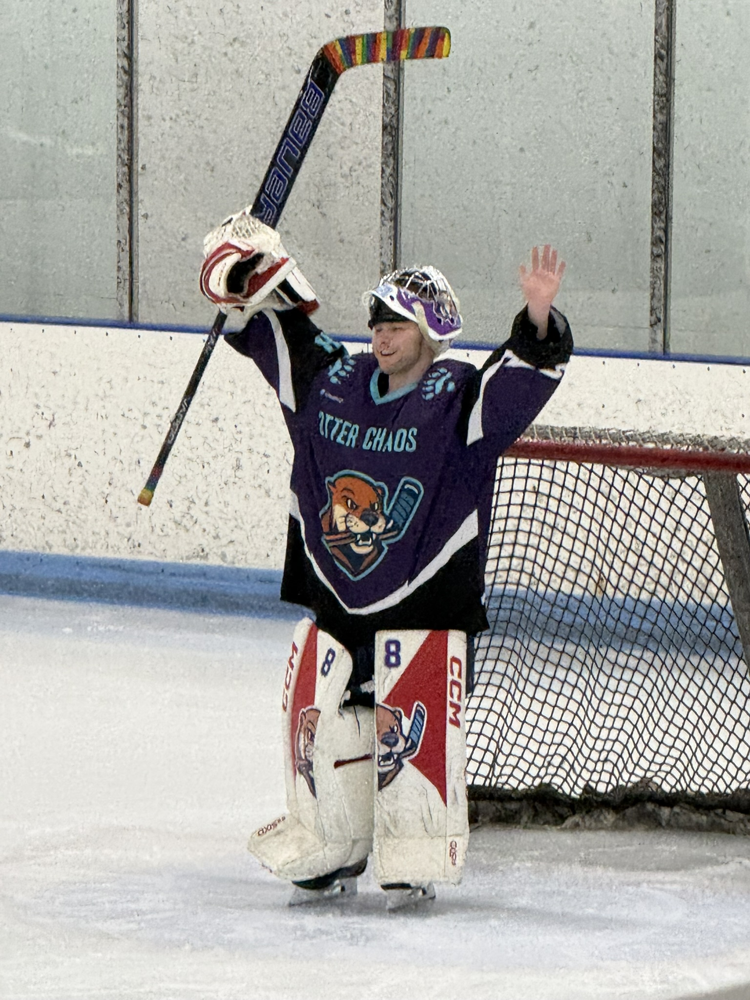

My story
About Me
My experience and passion for playing hockey goalie.

How I Started Playing Hockey
Hockey has given me a way to challenge myself, stay active, and be part of a team. Playing goalie is exciting because every shift requires concentration, quick reactions, and the willingness to reset after each play.
My Hockey Journey
Over the years, I have continued building my goaltending experience through competitive play. I have played in a blended league with college-level competition and regularly play for a C3 team. I have also stepped in to play goalie for C1 and C2 teams when they needed an extra goaltender.
What I Enjoy About Goaltending
I enjoy reading the play, making saves, controlling rebounds, and helping teammates stay organized.
What I Keep Working On
I focus on improving positioning, puck tracking, movement, rebound control, communication, and consistency.